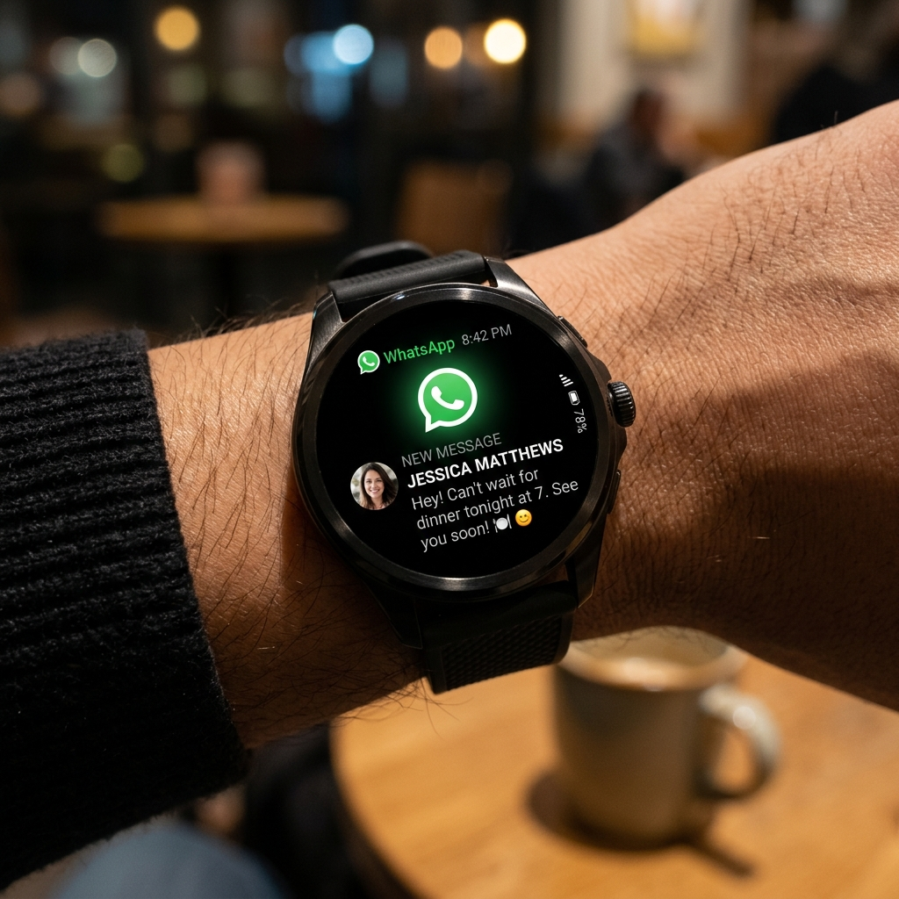

Yıllar boyunca akıllı saatte WhatsApp kullanmak yarım yamalak bir deneyim gibi hissettirdi. Kullanıcılar yalnızca aktif bildirimler geldiğinde onlara yanıt verebiliyordu; bir uyarıyı yanlışlıkla kapattıklarında, sohbet kutusunu açmanın veya saatin kendisinden yeni bir mesaj başlatmanın hiçbir yolu yoktu. Wear OS için resmi bağımsız WhatsApp uygulamasının yayınlanmasıyla bu durum tamamen değişti. Artık tüm sohbet geçmişinize göz atabilir, sesli notlar gönderebilir ve doğrudan bileğinizden internet aramaları yapabilirsiniz.
Bu kılavuz, Samsung Galaxy Watch ve Google Pixel Watch serisi dahil olmak üzere Wear OS 3, 4, 5 ve üzeri sürümlerle uyumlu resmi bağımsız WhatsApp uygulamasını nasıl kuracağınızı, yapılandıracağınızı ve ustalaşacağınızı kapsamlı bir şekilde anlatmaktadır.

Bağımsız WhatsApp İçin Ön Koşullar

Saatinizde resmi WhatsApp uygulamasını kullanmak için cihazlarınızın şu temel gereksinimleri karşıladığından emin olun:
- Akıllı saatiniz Wear OS 3 veya daha yüksek bir sürümü çalıştırmalıdır. Daha eski sürümler resmi Meta uygulaması tarafından desteklenmez.
- Akıllı telefonunuz internete bağlı olmalı ve en son WhatsApp sürümüne sahip olmalıdır.
- Akıllı saatiniz Bluetooth aracılığıyla telefonunuza bağlı olmalı veya ilk kurulum sırasında aktif bir Wi-Fi/LTE internet erişimine sahip olmalıdır.
Adım Adım Kurulum ve Bağlama Ayarları
Saatinizde WhatsApp'ı ayarlamak, WhatsApp Web veya Masaüstü kurulumuna benzer şekilde bir ilk eşleştirme işlemi gerektirir. Şu adımları izleyin:
- Wear OS akıllı saatinizde Play Store uygulamasını açın.
- "WhatsApp" kelimesini arayın ve Meta Platforms, Inc. tarafından yayınlanan resmi uygulamaya dokunun. Yükle seçeneğine dokunun.
- Yüklendikten sonra uygulamayı saatinizde açın. Saat ekranında 8 haneli bir eşleştirme koduyla karşılaşacaksınız.
- Aynı anda eşlik eden akıllı telefonunuzda yeni bir cihaz bağlamaya çalışıp çalışmadığınızı soran bir bildirim açılacaktır. Bildirime dokunun.
- Bildirim görünmezse telefonunuzda WhatsApp'ı açın, Ayarlar > Bağlı Cihazlar bölümüne gidin, Cihaz Bağla seçeneğine dokunun ve harf-sayı içeren kod seçeneğini belirleyin.
- Saatinizin ekranında gösterilen 8 haneli kodu telefonunuzdaki uygulamaya girin.
- Veritabanının senkronize edilmesi için birkaç dakika bekleyin. Saatiniz son sohbet geçmişinizi indirecektir ve kurulum tamamlanacaktır!
Uzman İpucu: LTE Bağımsız Kullanım
Aktif bir eSIM'e sahip LTE özellikli bir akıllı saatiniz varsa, telefonunuzu tamamen evde bırakabilirsiniz! Bağımsız Wear OS uygulaması, hücresel veri ağları üzerinden mesajları doğrudan alıp gönderecek, böylece dışarıda koşarken veya market alışverişi yaparken bağlantıda kalmanızı sağlayacaktır.
Saat Arayüzünde Uzmanlaşmak
Wear OS WhatsApp arayüzü iki ana alana ayrılmıştır: Sohbet Kutusu ve Uygulama Kartı. Ana sohbet kutusu aktif konuşmalarınızı gösterir. Aşağı kaydırmak ayarlarınızı ve arşivlenmiş sohbetlerinizi ortaya çıkarır. Uygulama, küçük ekrana sığacak şekilde çeşitli iletişim modlarını destekler:
1. Yazma ve Klavye Girişi
Bir konuşmaya dokunmak sohbet geçmişini açar. Metinle yanıt vermek için metin çubuğuna dokunun. Saatinizin varsayılan sanal klavyesini kaydırarak yazmak veya harf harf dokunmak için kullanabileceğiniz gibi, sistemin otomatik olarak yazılı metne dönüştürdüğü Ses-Metin dikte mikrofonunu da kullanabilirsiniz. Bu son derece hassastır ve 1.4 inçlik bir ekranda yazmaktan çok daha hızlıdır.
2. Sesli Not Gönderme
Bazen doğrudan ses kaydı göndermek istersiniz. Wear OS uygulaması, giriş kutusunun yanında özel bir mikrofon simgesine sahiptir. Sesli notunuzu hemen kaydetmeye başlamak için bu simgeye dokunun. Bitirdiğinizde gönder düğmesine dokunun. Gelen sesli notları da doğrudan saatinizin dahili hoparlöründen veya bağlı Bluetooth kulaklığınızdan dinleyebilirsiniz.
3. Hızlı Yanıtlar ve Emojiler
Hızlı iletişim için sohbetin en altına inerek önceden yapılandırılmış Hızlı Yanıtları (örneğin "Tamam", "Evet", "Yoldayım" veya "Seni sonra arayacağım") bulabilirsiniz. Bunları ayarlardan özelleştirebilirsiniz. Gülen yüz simgesine dokunmak emoji seçiciyi açarak tek bir dokunuşla tepki vermenizi sağlar.
Özellik Karşılaştırması: Saat Uygulaması vs. Telefon Uygulaması
| Özellik | Wear OS Uygulaması | Akıllı Telefon Uygulaması |
|---|---|---|
| Metin Gönderme/Alma | Evet | Evet |
| Sesli Notlar | Evet (Kaydet ve Dinle) | Evet |
| Görsel/Medya Görüntüleme | Evet (Düşük Çözünürlük) | Evet (Tam Çözünürlük) |
| Sesli Arama Başlatma | Evet (İnternet Üzerinden) | Evet |
| Görüntülü Arama | Hayır | Evet |
| Durum Güncellemeleri | Hayır | Evet |
Bağlantı Hatalarını Giderme
WhatsApp saat istemciniz "Bağlanıyor..." yükleme döngüsünde kalıyorsa veya gelen mesajları senkronize edemiyorsa şu sorun giderme adımlarını deneyin:
- Her İki Cihazı da Yeniden Başlatın: Hem saatinizi hem de telefonunuzu kapatıp açın. Bu, geçici yerel ağ önbelleklerini temizler.
- Pil Tasarrufundan Muaf Tutun: Telefonunuzda WhatsApp'ın arka planda uyutulmadığından emin olun. Telefonunuzun pil ayarlarına gidin ve WhatsApp'ı "Kısıtlanmamış" olarak işaretleyin.
- Cihazı Yeniden Bağlayın: Telefonunuzda WhatsApp'ı açın, Bağlı Cihazlar bölümüne gidin, saatinizi seçin ve Çıkış Yap seçeneğine dokunun. Yeni bir bağlantı kodu oluşturmak ve temiz bir veritabanı eşleşmesi sağlamak için saat uygulamasını tekrar açın.
Son Sözler
Wear OS için resmi bağımsız WhatsApp istemcisi, giyilebilir üretkenlik için ileriye doğru atılmış büyük bir adımdır. Bir bildirim titreştiğinde her seferinde cebinize ulaşma zorunluluğundan sizi kurtarır. Bağlantı kodlarından, sesli not kaydından ve akıllı dikte özelliklerinden yararlanarak sadece bileğinizdeki saati kullanarak arkadaşlarınızla ve ailenizle bağlantıda kalabilirsiniz!